Search results lacked intent awareness

People don’t search for products.
They search for outcomes.
We redesigned search to understand intent, not keywords.
Project Snapshot
We explored how users search when they do not know the exact product name, then shaped an AI-backed discovery system that translates needs, budget, and preferences into clearer product decisions.
The Problem
Queries were often based on budget, use-case, and preferences. However, the existing system primarily relied on keyword matching, making it difficult for users to find the most relevant products quickly.
Search results lacked intent awareness
Users had to manually filter and compare products
Product cards did not explain why results were relevant
Decision-making required too much effort on mobile
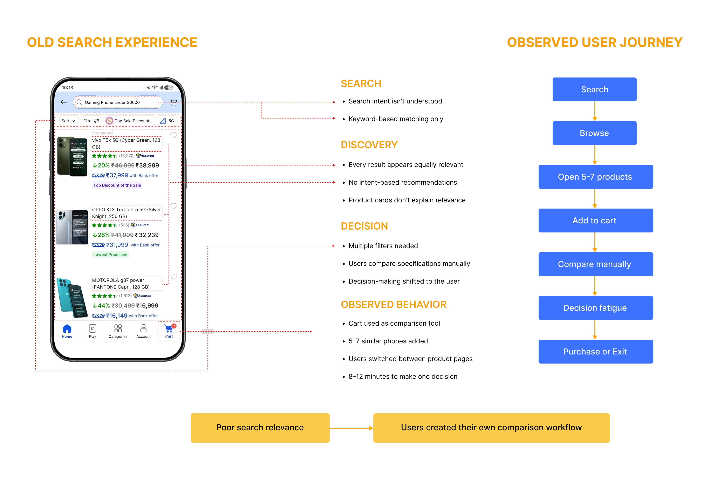
Research & Insights
Through user interviews, behavioral observation, search-query analysis, and journey review, we found that many users did not begin with an exact product in mind. They described a budget, purpose, audience, or expected outcome and relied on the platform to help narrow the decision.
Research approach
Interviewed and observed users across different levels of shopping experience, with a focus on electronics and mobile discovery.
Reviewed how users phrased searches, including budget-led, use-case-led, feature-led, and exact-product queries.
Observed how users moved between search results, product pages, filters, reviews, and the cart while evaluating options.
Mapped the steps users created for themselves when search results did not provide enough decision support.
Compared search and recommendation patterns across leading e-commerce and product-discovery platforms.
Key research metrics
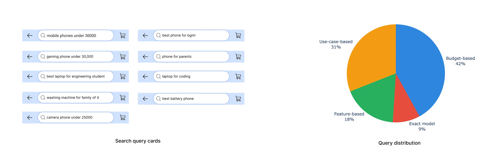
What the query revealed
User query “Best gaming phone under ₹30,000”
The system could retrieve products, but it did not explain which products best satisfied the user’s actual goal.
Search behavior patterns
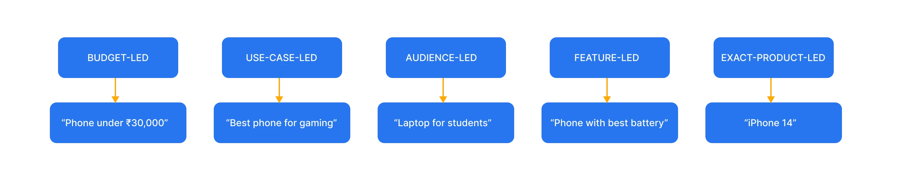
Users with exact product names moved through the journey more confidently. Users with natural-language intent needed more guidance, ranking, and explanation.
Four primary research insights
Many users began with constraints and outcomes rather than brands or exact model names.
Users opened multiple products, switched between screens, and manually compared specifications.
These users were less confident interpreting technical specifications and wanted clearer recommendations.
Ratings, verified reviews, seller reliability, return information, pricing, and delivery confidence affected the final choice.
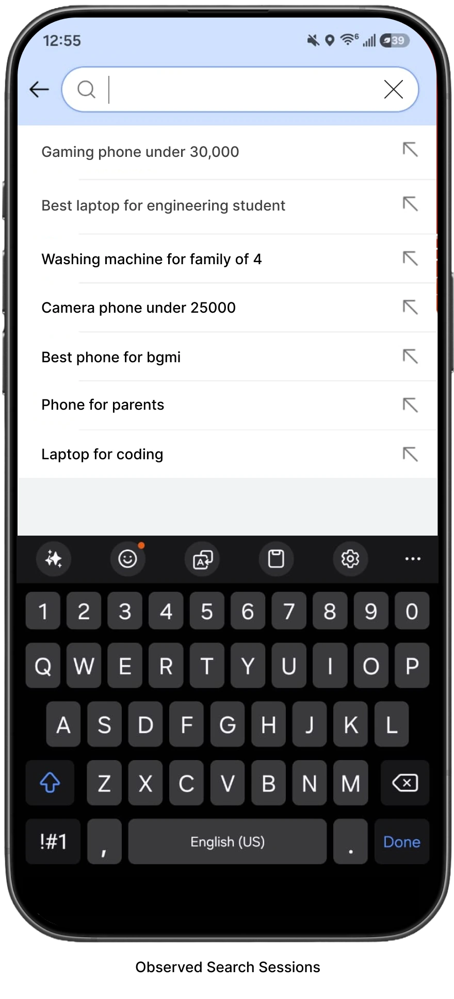
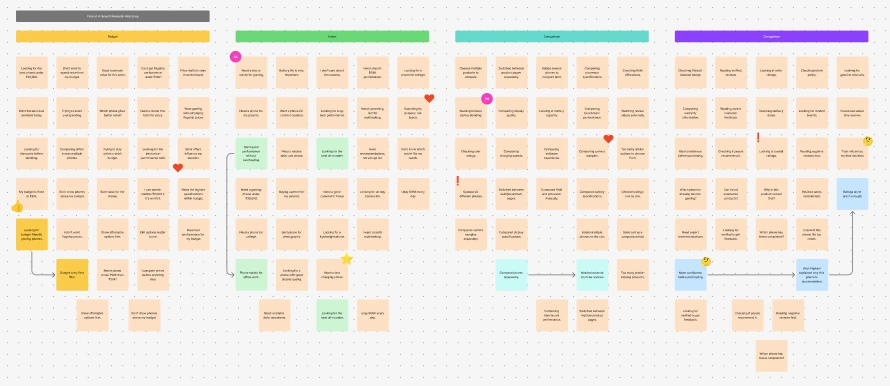
Research Takeaways
Research conclusion
Users were not only struggling to find products. They were struggling to decide which product best matched their needs.
The existing experience returned options. The opportunity was to provide understanding, prioritization, and decision guidance.
Behavioral observation: Users were not always using the cart only to purchase. In many sessions, the cart became a temporary comparison space for several similar products.
Instead of relying on keyword matching alone, the redesigned discovery engine understands user intent, extracts shopping signals, ranks products by relevance, and organizes results into contextual recommendation clusters. This transforms search from retrieving products into guiding confident purchase decisions.
Shopping Signals Identified
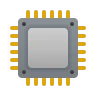
Processor (Performance) GPU (Graphics)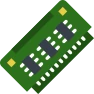
RAM Refresh Rate Battery Capacity Charging Speed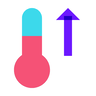
Thermal Management Reviews & Ratings Price Availability Brand Trust PopularityRanking Factors (Weighted)
Overall Relevance Score (0 – 100)
89%
Products organized into meaningful clusters
Intent Chips
AI Explanation
Top Recommendation
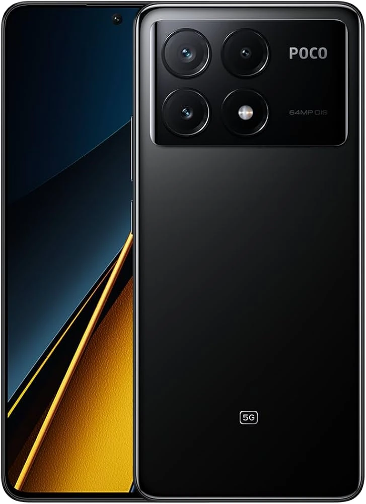
Poco X6 Pro 5G 8GB | 256GB ₹24,999 Best for GamingTraditional Search
AI Discovery (Redesigned)
12+
Shopping signals extracted
From query, behavior & marketplace data
5
Meaningful result clusters
Organized by intent and product strengths
90%+
Relevant recommendations
Improved relevance and user satisfaction
Before designing the final AI-powered discovery experience, I explored multiple layouts, navigation patterns, interaction models, and product discovery flows. These low-fidelity wireframes helped validate the overall information architecture before investing in high-fidelity design.

We transformed keyword-based search into an AI-powered product discovery experience by combining intent understanding, visual search, and guided exploration to reduce decision effort and improve shopping confidence.
Problem solved: Traditional keyword search couldn’t understand what shoppers were actually trying to accomplish. Solution: Interprets natural language to identify budget, use-case, category, and shopping preferences before retrieving products.
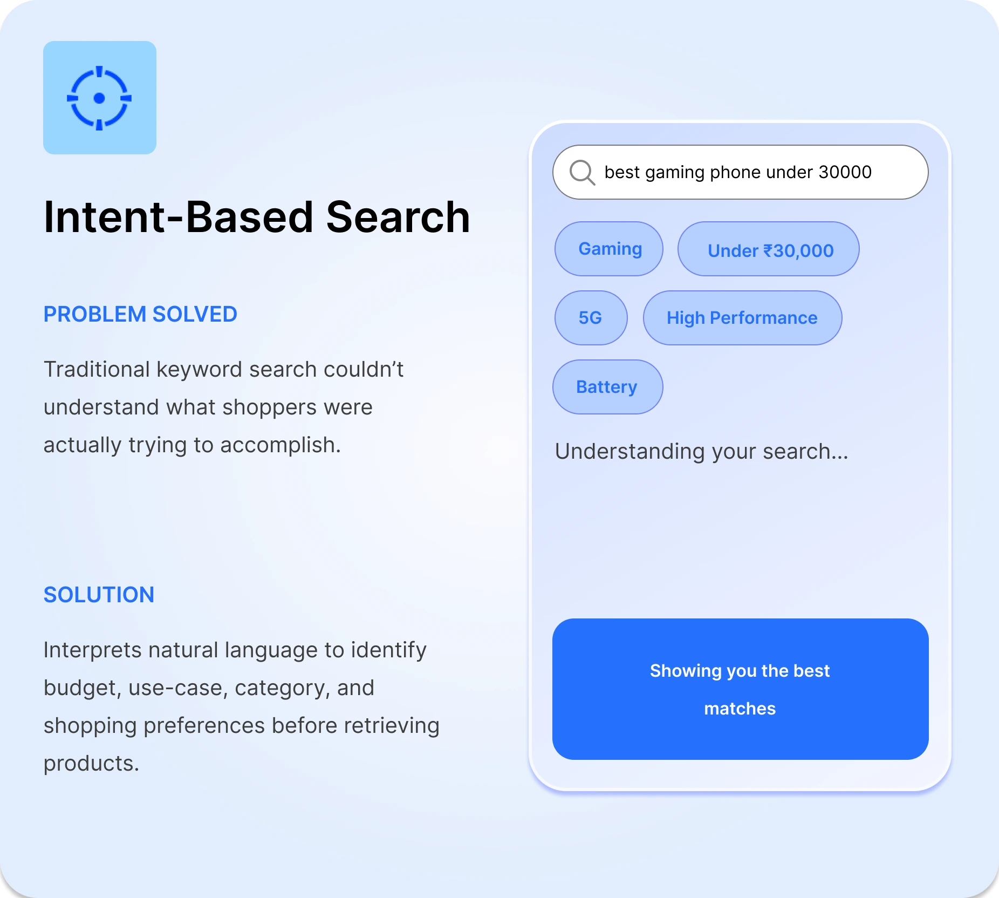
Problem solved: Users often knew what they wanted visually but couldn’t describe or remember the product name. Solution: Enables discovery using photos, screenshots, or camera input to instantly identify similar products.
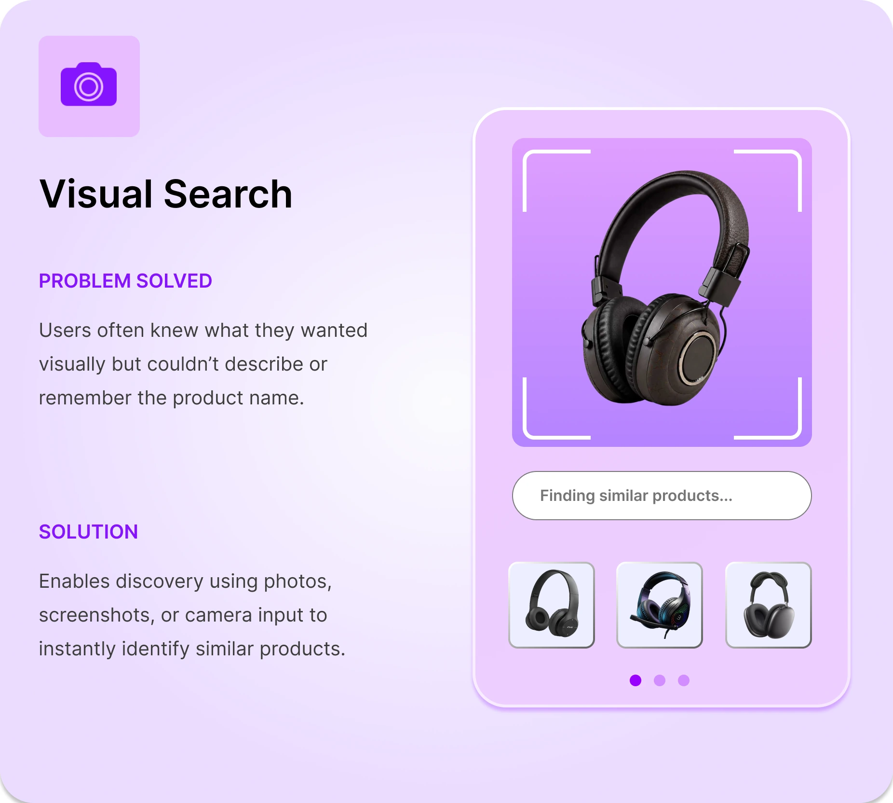
Problem solved: Large product lists created comparison fatigue and slowed decision-making. Solution: Groups products into contextual clusters with smart filters, recommendations, and AI-generated explanations.
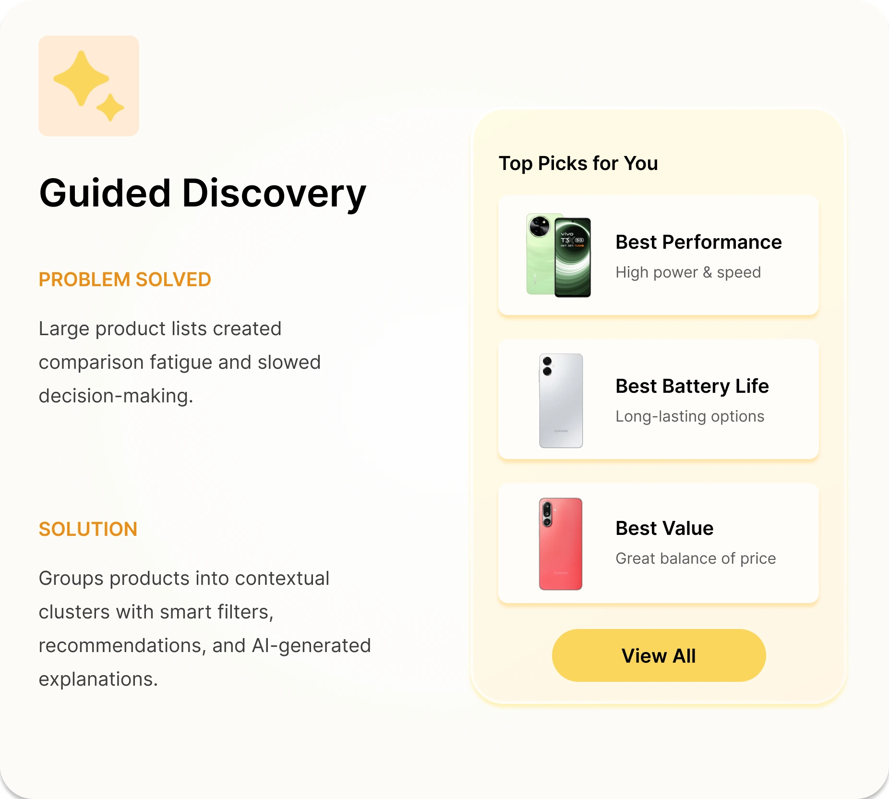
See how key shopping moments evolved from manual product lookup into an intent-aware discovery experience.
01 / Search Entry
Before
Search depended on users knowing what to type, with recent searches and product-name suggestions driving discovery.
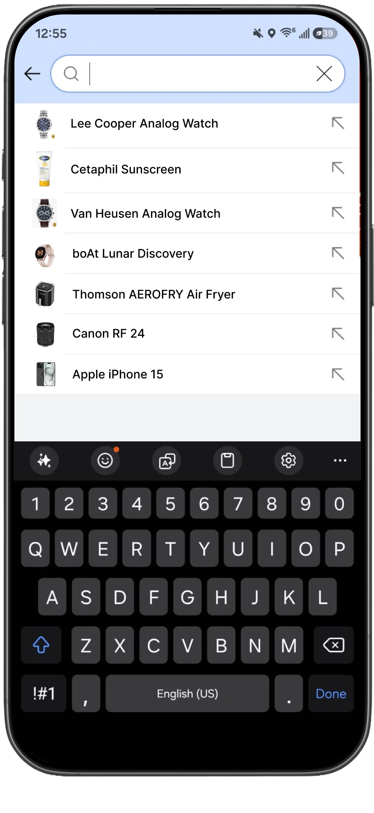
Users needed an idea of what product or keyword to search for.
After
Users can begin discovery through text, photos, gallery uploads, or contextual suggestions—even without knowing the exact product name.
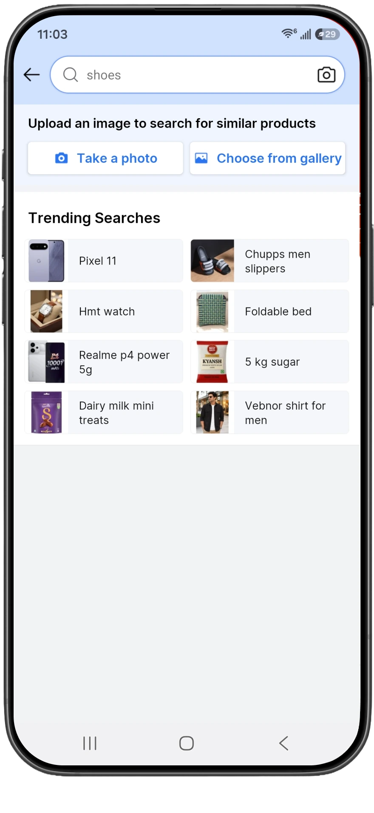
Multiple discovery paths reduce dependence on exact product names.
The redesign reduced decision friction, improved discovery, and increased user confidence throughout the shopping journey.
Search-to-product CTR
0% → 0%
More users reached relevant product pages after AI-powered intent understanding replaced keyword-only matching.
Search-led conversions
+0%
Better product recommendations and contextual discovery increased purchase intent.
Return rates
−0%
Improved intent matching reduced mismatched purchases and increased shopping confidence.
First-time buyer conversion
+0%
Guided discovery helped new shoppers compare products faster and make confident decisions.
I learned that great product experiences begin with understanding user intent, not designing individual screens. Defining how the system thinks became just as important as designing the interface itself.
Rather than solving isolated problems, I focused on creating a scalable discovery system where search, recommendations, filters, and comparisons work together as one connected experience.
Every design decision considered both user needs and marketplace goals—reducing decision effort while improving engagement, confidence, and conversion opportunities.
Designing AI isn’t about replacing user decisions.
It’s about helping people make better ones.